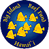

Partner Projects
Over the years, Malama Kai Foundation has worked closely with State and Federal agencies, the University of Hawaiʻi, private businesses, and local communities to raise funds and carry out projects. Below are our more involved or active projects we participate in.
View Past ProjectsPartner Projects
Big Island Reef Fund
The Big Island Reef Fund (BIRF) is a collaborationbetween Malama Kai Foundation and Coral Reef Alliance (CORAL) to promote conservation and sustainable use of marine resources on the Island of Hawaiʻi. The primary goals are to:

- Leave the marine environment in a better state for future generations;
- Build support through private donations from ocean users to fund marine conservation, restoration and research projects; and
- Keep the Island of Hawaiʻi as a model for marine conservation.
More information is available with downloadable PDF documents: BIRF Overview and BIRF Projects - How To Help
Coral Reef Alliance
www.coral.org
The Coral Reef Alliance (CORAL) and Malama Kai Foundation partner in many coral reef protection projects like the Day-Use Mooring Program and BIRF. CORAL is the only international organization working exclusively to save coral reefs.
CORAL provides education, tools, and inspiration to help local communities become passionate environmental stewards for the reefs. Working with local communities, CORAL helps develop managed marine protected areas and sustainable businesses to benefit coral reefs and people.
West Hawaiʻi Fisheries Council
The West Hawaiʻi Fisheries Council (WHFC) provides a community-based approach to fisheries management. In 1998, the Hawaiʻi State Legislature passed Act 306, which established the West Hawaiʻi Regional Fishery Management Area (FMA) under the Hawaiʻi Department of Land and Natural Resources (DLNR). The Act defined the West Hawaiʻi area to encompass the nearshore waters from ‘Upolu point (North Kohala) to Ka Lae (Ka‘?) on the island of Hawaiʻi, a shoreline distance of approximately 147 miles. The purpose of Act 306 is to effectively manage fishery activities to ensure sustainability, enhance near shore resources, and minimize conflicts of use in the West Hawaiʻi Regional Fishery Management Areas. TheWHFC was formed in 1998 to accomplish the goals and tasks of the legislation. MKF has received funding to provide administrative support to the WHFC. ?
Numerous other downloadable documents relating to the WHFC are found in the Resources section.
Hawaiʻi Fishing and Boating Association
www.hawaiifishingandboating.com
Formed in 2010 in response to a DLNR Division of Boating and Ocean Recreation decision to implement parking fees at Honokōhau Small Boat Harbor, the mission of Hawaiʻi Fishing and Boating Association (HFBA) is to advocate for fair and effective management of local harbors, boating facilities, and ocean activities. Its strategy is to represent the community on issues that affect small boat harbors, their users, and the activities those harbors support, by working with state and federal agencies and others, to ensure community access to the ocean and that boating facilities are improved, maintained, and kept clean for Hawaiʻi’s citizens and visitors.
Malama Kai Foundation will serve as the fiscal agent for HFBA and support projects, public education, and outreach that have positive benefits for harbor users, facilities, and ocean resources. HFBA’s advocacy with government does not involve Malama Kai Foundation.
ReefWatchers
Community involvement and cooperation is the key to successful management of coral reef resources. Volunteer monitoring provides an opportunity for people to feel connected to the management process rather than alienated by it. Informed and knowledgeable community members are more likely to support management controls resulting from scientific monitoring.
With funding from 1999 to 2002 from the Hawaiʻi Coral Reef Initiative and Hawaiʻi Coastal Zone Management Program, a model for a volunteer monitoring program "ReefWatchers" was developed to gather data of interest to the Hawaiʻi Department of Land and Natural Resources, Division of Aquatic Resources (DLNR-DAR). The protocol was developed in collaboration between state agency researchers, resource managers, and the volunteers themselves. Volunteer monitoring protocols include fish surveys on point-to-point transects, random swim surveys, and tidepool surveys.
The ReefWatcher program has continued since 2002 with funding from the Harold K.L. Castle Foundation. Over 440 individuals have received ReefWatcher training. Not all people commit to the responsibility of a monitoring site; however, the training alone raises the level of understanding of Hawaiʻi’s marine ecosystems. Over the years, 31 volunteers have monitored 15 fish-count transects and 19 volunteers have monitored 10 tidepools for as few as 2 years to as many as 10 years. Data are managed by the West Hawai'i Sea Grant Extension Service, using a program developed by DLNR-DAR, and made available for use to DLNR-DAR and the University of Hawaiʻi.
In addition to the ongoing work of ReefWatcher volunteers on designated sites, ReefWatcher training has also been provided to the Hawaiian communities of Miloli`i, Hookena, Honaunau and Kalapana to enable those groups to establish and maintain databases to support their own marine resource management efforts.
For more information about ReefWatchers contact data manager Chantal Chung, UH Sea Grant, at cechung@hawaii.edu